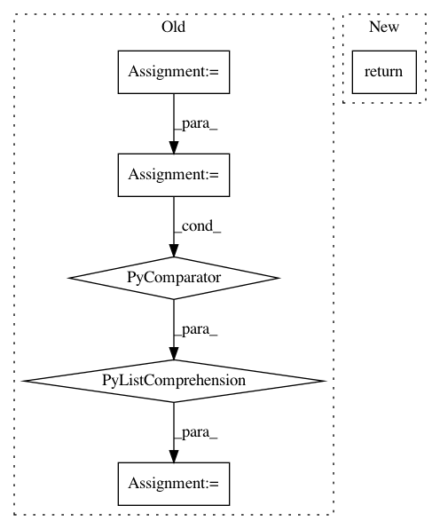

7f9a6b76960ba828e970940b41d5238ec1b44285,softlearning/replay_pools/flexible_replay_pool.py,FlexibleReplayPool,random_batch,#FlexibleReplayPool#Any#Any#,86
Before Change
return np.random.randint(0, self._size, batch_size)
def random_batch(self, batch_size, field_name_filter=None):
field_names = self.field_names
if field_name_filter is not None:
field_names = [
field_name for field_name in field_names
if field_name_filter(field_name)
]
indices = self.random_indices(batch_size)
return {
field_name: getattr(self, field_name)[indices]
for field_name in field_names
}
After Change
def random_batch(self, batch_size, field_name_filter=None):
random_indices = self.random_indices(batch_size)
return self.batch_by_indices(random_indices, field_name_filter)
def batch_by_indices(self, indices, field_name_filter=None):
field_names = self.field_names
if field_name_filter is not None:
In pattern: SUPERPATTERN
Frequency: 3
Non-data size: 6
Instances
Project Name: rail-berkeley/softlearning
Commit Name: 7f9a6b76960ba828e970940b41d5238ec1b44285
Time: 2018-08-09
Author: kristian.hartikainen@gmail.com
File Name: softlearning/replay_pools/flexible_replay_pool.py
Class Name: FlexibleReplayPool
Method Name: random_batch
Project Name: apple/coremltools
Commit Name: a63319be4c70271f229c9f5c3423a97c7535f08b
Time: 2020-05-18
Author: aseem.elec@gmail.com
File Name: coremltools/models/neural_network/spec_inspection_utils.py
Class Name:
Method Name: get_feature_description_summary
Project Name: apple/coremltools
Commit Name: e90500df86f25f3454fc55b991f7f8e0f0cb9f3b
Time: 2018-07-03
Author: znation@apple.com
File Name: coremltools/models/utils.py
Class Name:
Method Name: _get_nn_layers